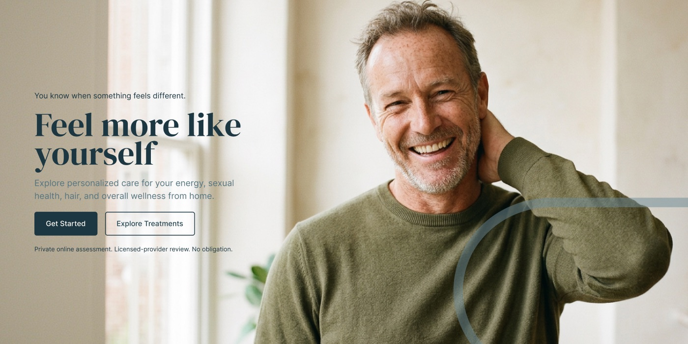
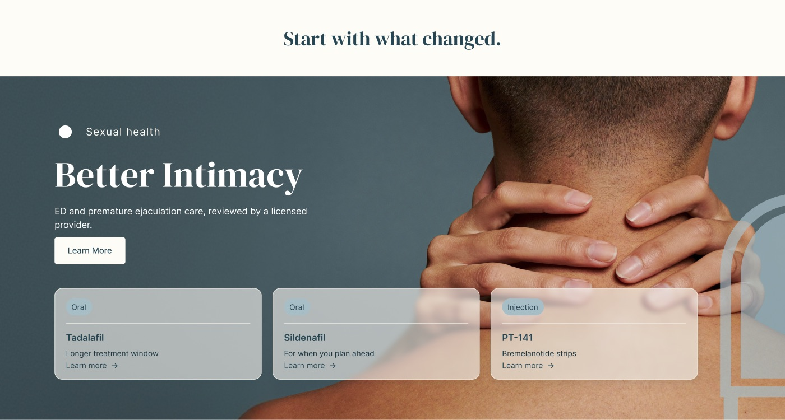
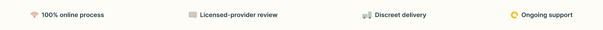
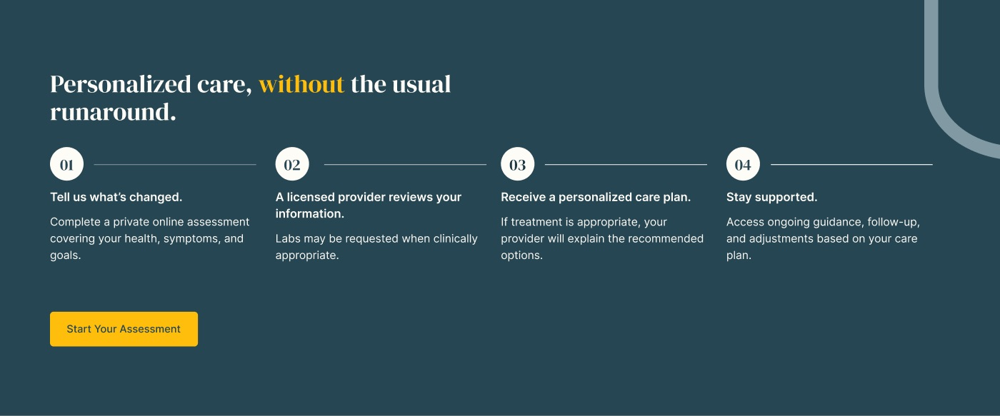
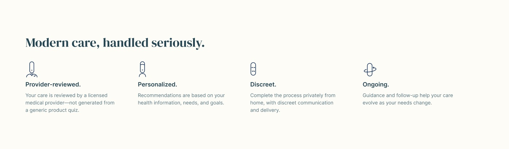
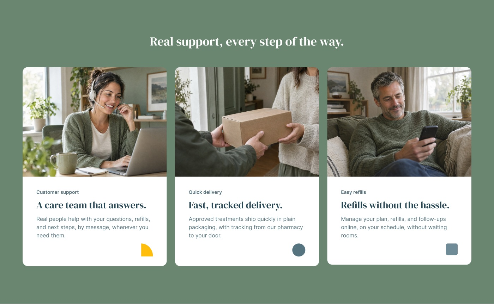
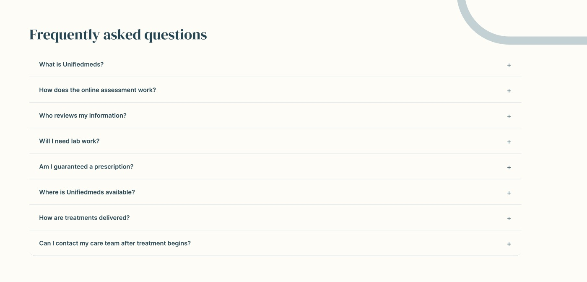

Home section library.
The seven sections of the unifiedmeds homepage, in order, from the designer's Figma (homepage 2673-209). Category and inner pages reuse these sections; no new section types per category. Mobile (390): every section stacks in one column in the same order; the notes say what changes.
Sections, top to bottom.

Headline 70/60 (homepage only; 34/40 on mobile), one subhead, Dark and Outline buttons, then under the buttons the consultation slot "[charge line · operations]" (R-62) and "Assessment only. Not a diagnosis." (R-63). A large outline capsule crops the photo at the bottom right. Copy never sits on the face or on the shape (R-110). Mobile: the photo sits above the copy; the buttons stack full width.
Figma 2673-211

One category at a time on a dark photo band, with product cards. At launch only Sexual health. A vertical outline capsule crops the right edge.
Under the product cards: "Prescription treatment is subject to provider approval. Results vary." Product colours mark each card with a dot or an edge, never a ground for text (R-85). Card action "Learn more".
Figma 2673-228 · product names here: legal to confirm (R-65)

Four short facts with small icons. Facts only; no ratings, reviews or press logos (R-67).
Figma 2673-384

Deep Teal section, four numbered steps; the step circle fills Yellow on hover (R-44). One Yellow button, the only Yellow element in view. Mobile: the steps stack in one column.
Current · q132 The one How it works wording, reused word for word on the website, the landing pages and the ads (Figma shows "Start Your Assessment": the button is "Get started", R-55):
- Tell us what's changed.Complete a private online assessment covering your health, symptoms, and goals.
- A licensed provider reviews your information.Labs may be requested when clinically appropriate.
- Receive a personalized care plan.If treatment is appropriate, your provider will explain the recommended options.
- Stay supported.Access ongoing guidance, follow-up, and adjustments based on your care plan.
Figma 2673-646 · specimens: Components · Stepper

Four feature icons from the capsule set with a title and one sentence each.
Icons in Deep Teal, 64 on desktop and 48 on mobile, from the capsule set (R-35; O-06 closed).
Figma 2673-682

Three photo cards on Pastel Green: support, delivery, refills. One small Quadrant piece per card.
Casting: a balanced mix of people of all genders in service and support sections (R-37). Mobile: the cards stack.
Figma 2817-344

Accordion rows, opening in 220ms; a large outline capsule crops the top right corner.
Figma 2673-784